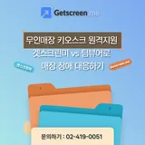
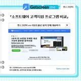

고객지원
막히는 부분은 바로 물어보세요
원격지원 접속, 전화, 카카오톡, 이메일로 도입과 사용 문의를 받습니다.
자주 묻는 질문
궁금한 점을 먼저 확인하세요
Q정말 설치 없이 원격지원이 되나요?
상담원은 설치 없이 웹 브라우저에서 바로 지원을 시작합니다. 지원받는 고객은 초대 링크를 열거나 코드를 입력한 뒤, 안내된 접속용 파일을 실행하면 연결됩니다.
Q고객은 어디로 접속하나요?
상담원이 보낸 초대 링크를 열거나, 고객용 접속 페이지(363.co.kr)에서 안내받은 코드로 연결합니다.
Q사람이 없는 PC나 키오스크에도 접속할 수 있나요?
네. 기기에 에이전트를 설치하고 관리 계정에 등록하면 상시 접속할 수 있습니다. 기기의 전원과 인터넷 연결은 유지되어야 하고, 절전 중인 PC는 Wake-on-LAN으로 깨울 수 있습니다(BIOS·네트워크 설정 필요).
Q요금은 어떻게 되나요?
Advanced 상담원 3명(3유저 1팩)은 연 30만원, 상담원 1명은 연 15만원입니다. 무인기기 상시접속에 쓰는 장치 라이선스는 별도이며, 장치 100대 팩이 연 30만원입니다. 모두 부가세 별도이고 2026년 11월 3일 공개된 국내 공식 요금 기준입니다.
Q무료로 써 볼 수 있나요?
FREE 버전으로 바로 시작할 수 있습니다. 공식 사이트에는 14일 무료 사용 신청과 최대 1개월 체험판(모든 기능 제한 없이 사용)이 안내되어 있습니다. 원격지원 성능은 인터넷 환경과 기기 사양, 운영체제에 따라 달라지니 실제 기기로 먼저 확인해 보세요.
Q상담원 한 명이 동시에 여러 고객을 지원할 수 있나요?
Advanced 요금제는 상담원당 동시 지원 세션이 무제한입니다. 관리 패널에서 여러 기기에 동시에 연결하고 쉽게 전환합니다.
Q여러 상담원이 함께 지원할 수 있나요?
네. 여러 상담원이 하나의 원격 지원 세션에 동시에 참여할 수 있습니다. 등록된 상담원과 익명 참여자 1명에게 동시 접속 권한을 줄 수 있습니다.
Q어떤 운영체제를 지원하나요?
Windows 7 이상, Windows Server 2008 R2 이상, macOS 10.12 이상, 리눅스(모든 버전), 안드로이드 7.0 이상을 원격으로 지원합니다. 공식 소개에는 iOS 지원도 안내되어 있으니, 쓰실 기능은 도입 상담에서 확인해 주세요.
Q보안은 어떻게 지켜지나요?
WebRTC와 SSL 안에서 128비트 AES로 암호화하고, 연결 에이전트는 샌드박스 환경에서 실행됩니다. 방화벽 포트를 열 필요가 없고, 소프트웨어 버전마다 VirusTotal 검증을 거쳐 자동으로 업데이트됩니다.
Q고객사가 많은데 기기를 어떻게 관리하나요?
고객사·부서별 그룹으로 나누고, 팀·그룹·사용자 단위로 기기를 공유하거나 접근을 제한할 수 있습니다.
Q설치형 프로그램으로도 쓸 수 있나요?
네. 관리 패널 기능을 담은 설치형 대시보드(데스크톱 앱)를 쓸 수 있습니다. 시스템 키 조합 동기화, 트레이 앱, 빠른 지원 준비 알림을 지원합니다.
블로그
원격지원 가이드
도입 전 비교 기준, 업종별 활용 방법, 보안·운영 팁을 블로그에 정리하고 있습니다.
글을 누르면 공식 블로그로 이동합니다. 표지가 있는 최근 글 5편은 해당 글로, 나머지는 글별 주소를 받기 전이라 블로그 첫 화면으로 연결합니다. 목록은 2026년 11월 9일 기준입니다.

무인매장 키오스크 원격지원｜겟스크린미 vs 팀뷰어, 매장 장애 대응 비교
소프트웨어 고객지원 프로그램 비교｜겟스크린미(Getscreen.me) vs 리모트콜(RemoteCall)- 겟스크린미(Getscreen.me) vs 팀뷰어(TeamViewer)｜여러 고객사 원격지원 관리 방식 비교
- 소규모 기업 원격지원 프로그램｜겟스크린미·팀뷰어 비교 포인트 4가지
- ERP 구축 후 반복되는 사용자 문의 줄이는 방법｜교육·FAQ·원격지원 겟스크린미
- 소프트웨어 업데이트 후 오류 대응｜겟스크린미·팀뷰어·리모트콜 원격지원 비교
- 2026년 하반기 원격지원 솔루션 비교｜겟스크린미(Getscreen.me) 선택 가이드
- 공장 PC 장애, 원격지원 솔루션으로 한 번에 해결하는 법
- SI 솔루션 개발보다 더 오래 걸리는 고객지원 업무, 원격지원 프로그램을 통한 솔루션
- 프랜차이즈 전산 담당자가 원격지원 프로그램으로 줄일 수 있는 반복 문의, 겟스크린미(Getscreen.me)로 더 효율적으로 관리하는 방법
- POS 설치 업체가 원격지원 프로그램으로 AS 출동을 줄이는 실무 방법
- 병원 의료장비 업체가 원격지원 프로그램(GetScreen.me, 겟스크린미) 도입 전 확인해야 할 보안 조건
- 가맹점 POS 장애 접수부터 조치까지 원격지원 프로그램 운영 매뉴얼
- 외부 유지보수 업체 원격접속을 관리하기 위한 원격지원 프로그램 감사 기준
- 원격지원 프로그램 API 연동이 필요한 SaaS 고객지원 시나리오, 자동화가 경쟁력이 됩니다
- 디지털 사이니지 화면 장애 대응에 원격지원 프로그램이 필요한 이유보다 중요한 것
- MES 장애 대응에 원격지원 프로그램을 적용할 때 확인해야 할 현장 조건
- ERP 유지보수 업체가 원격지원 프로그램을 운영 표준으로 둬야 하는 순간들
- 스마트팩토리 업체가 원격지원 프로그램으로 고객사 장애 리포트를 남기는 방법
- 원격지원은 IT팀만 쓰는 도구라는 오해
- AI 시대에도 원격지원은 왜 사라지지 않을까?
- 원격지원 프로그램 도입 전에 꼭 확인해야 할 체크리스트 7가지
- SaaS 시대, 왜 원격지원도 설치형에서 웹형으로 바뀌는가
- MSP·외주 IT업체가 고객 지원 속도를 높이는 방법